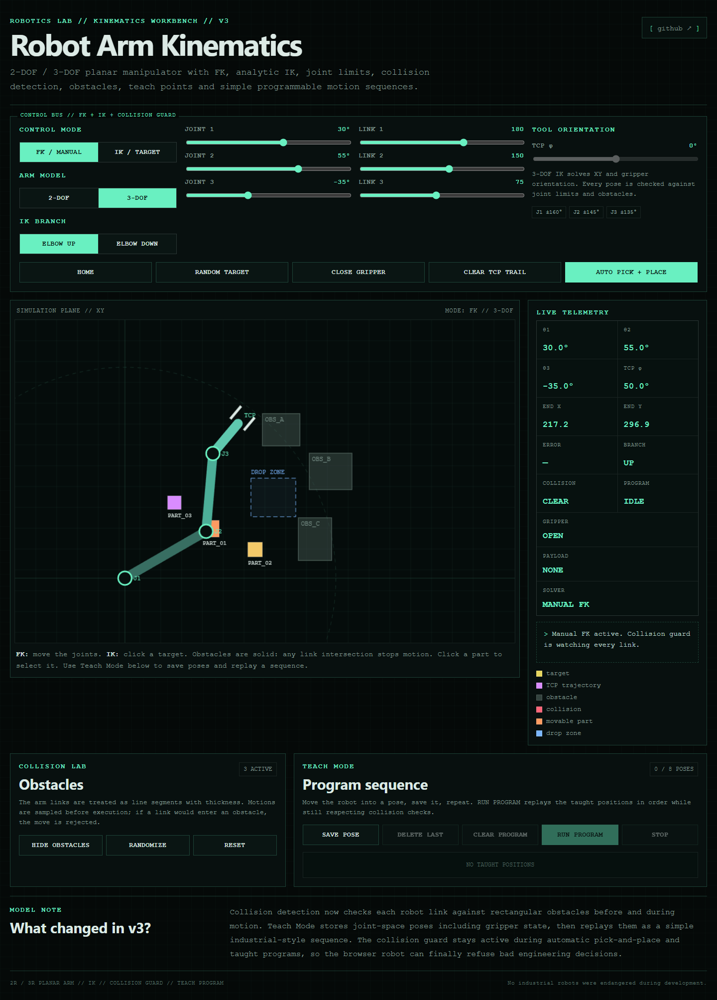
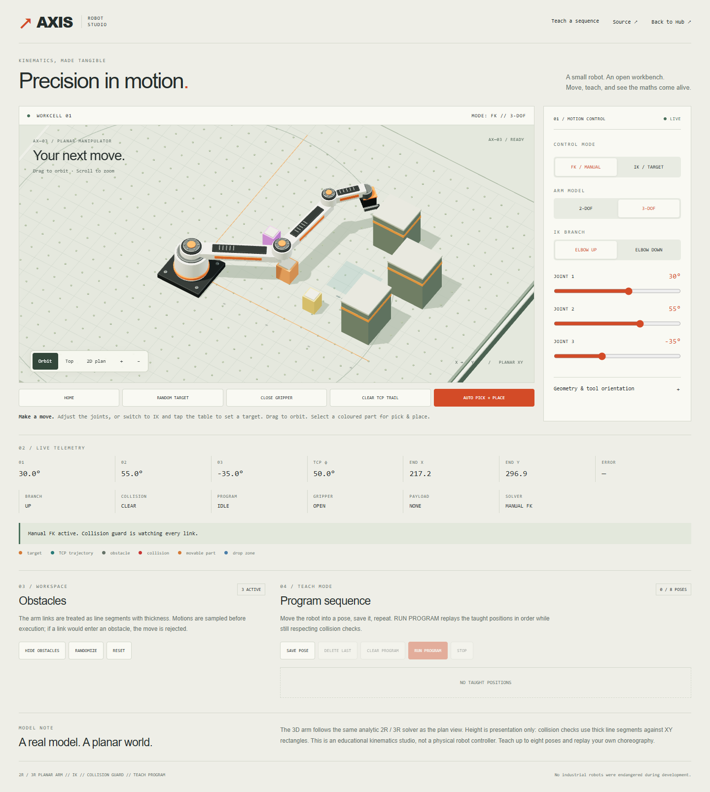
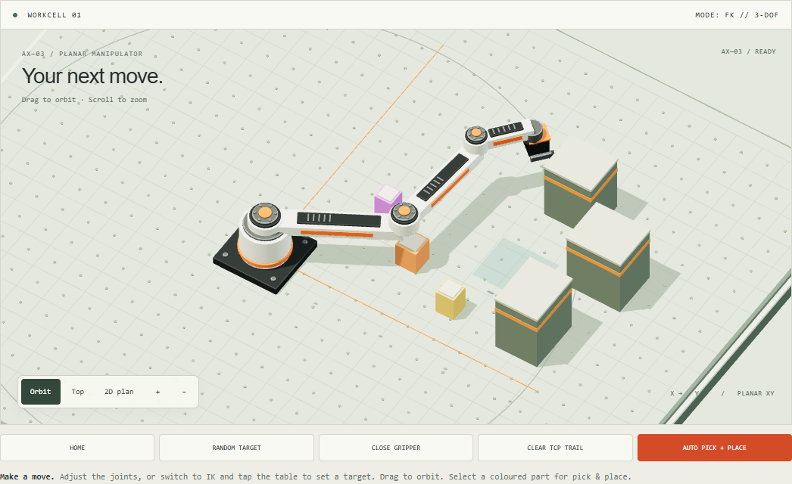
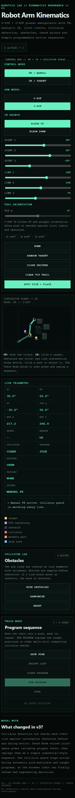
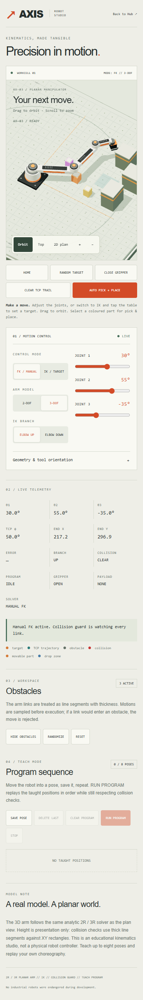
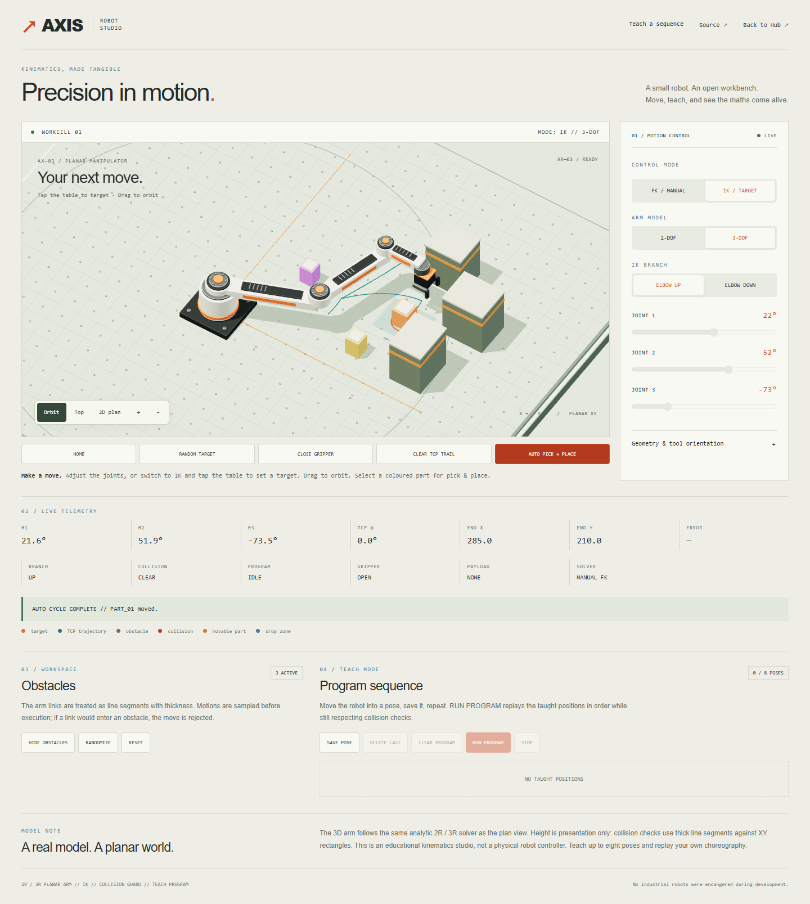

In motion
Real browser recording: automatic pick & place, camera views and a taught sequence. No offline animation.
Desktop / same initial pose
BEFORE / ORIGINAL LAB
AFTER / AXIS STUDIO
The workcell

3D presentation, shared 2R/3R solver. The plan view stays one click away.
Mobile / 390 px emulation
BEFORE
AFTER
Pick & place completed

41 browser and focused checks, 24 GLB pose alignments, 96 original solver comparisons. Review branch only; main remains unchanged.